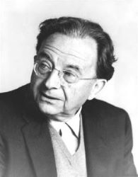
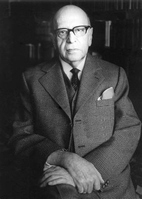

The Frankfurt School and Critical Theory
This is the history that academia omits regarding critical race theory (CRT). CRT did not originate from critical legal theory like academics claim. It originated from critical theory. Critical theory was founded on the idea of "cultural revolution" that began with Joseph Comte de Maistre. Since labor uprisings did not sweep the world as expected after Marxism proliferated human consciousness, another ideology was needed to destabilize the West. Thus, the Frankfurt Institute for Social Research, also known as the Frankfurt School, was established in Germany in 1923. The founders were self-professed German Marxists who combined Marxism and Freudian psychology to create critical theory. Erich Fromm was the first to synthesize Freudianism with Marxism.
Erich Fromm had a PhD in sociology, trained as a psychoanalyst, and opened his own practice in 1927 in Germany. Fromm joined the Frankfurt School in 1930 after being recruited along with Herbert Marcuse by Max Horkheimer, the Frankfurt School’s director. In 1973, Martin Jay published The Dialectical Imagination: A History of the Frankfurt School and the Institute of Social Research. In it, Jay states that Fromm combined Marxism and psychoanalysis to create "the missing link between ideological superstructure and socioeconomic base." However, critical theory rejected Marx’s economic determinism and the idea of objectivity.

"Until now, nations were killed by conquest, that is by invasion. But here an important question arises: can a nation not die on its own soil, without resettlement or invasion, by allowing the flies of decomposition to corrupt to the very core those original and constituent principles which make it what it is?"--Joseph Comte de Maistre (1753-1821)

"Reason is man's faculty for grasping the world by thought, in contradiction to intelligence, which is man's ability to manipulate the world with the help of thought. Reason is man's instrument for arriving at the truth, intelligence is man's instrument for manipulating the world more successfully; the former is essentially human, the latter belongs to the animal part of man."--Erich Fromm (1900-1980)
Cultural Revolution
Karl Marx and Friedrich Engels expected constant working class uprisings and revolutions to occur worldwide after their publications (The Communist Manifesto, 1848, and Das Kapital, 1867), but only a few had succeeded including the Bolshevik Revolution in Russia. Antonio Gramsci of the Italian Communist Party decided that the working classes had been brainwashed by the establishment’s conservative religious ideology. Vladimir Lenin called for a meeting to address this problem and to decide how best to teach the working classes what to think. Since labor uprisings had not accomplished their objective, a cultural revolution might. Critical theory was established to correct the working class’s thinking. In 1923, Felix Weil funded and established the Frankfurt School in Germany. But in January 1924, Lenin was dead. Fleeing the Nazi takeover in Germany, the Frankfurt School was relocated to Columbia University in New York in 1935. In 1937, Max Horkheimer published the Frankfurt School critical theory manifesto entitled Traditional and Critical Theory.

"The Revolution won’t happen with guns. Rather it will happen incrementally, year by year, generation by generation. We will gradually infiltrate their educational institutions and their political offices, transforming them slowly into Marxist entities [...]
"The more the concept of reason becomes emasculated, the more easily it lends itself to ideological manipulation and to propagation of even the most blatant lies [...] Subjective reason conforms to anything." --Max Horkheimer (1895-1973)